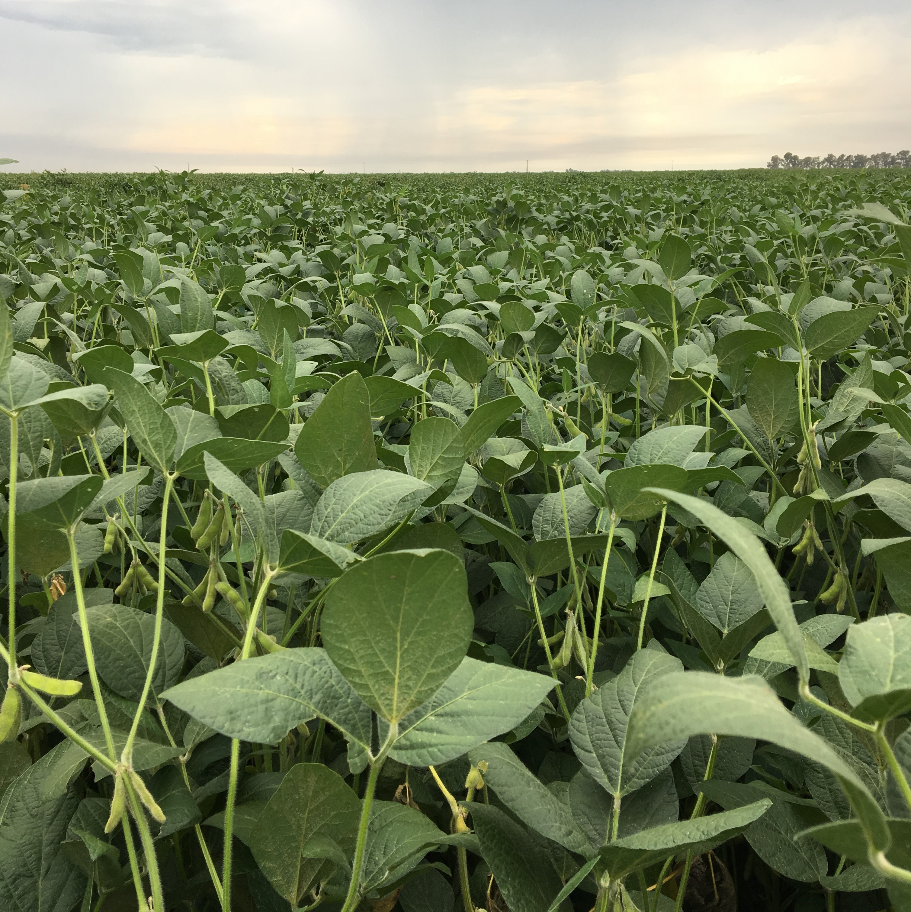
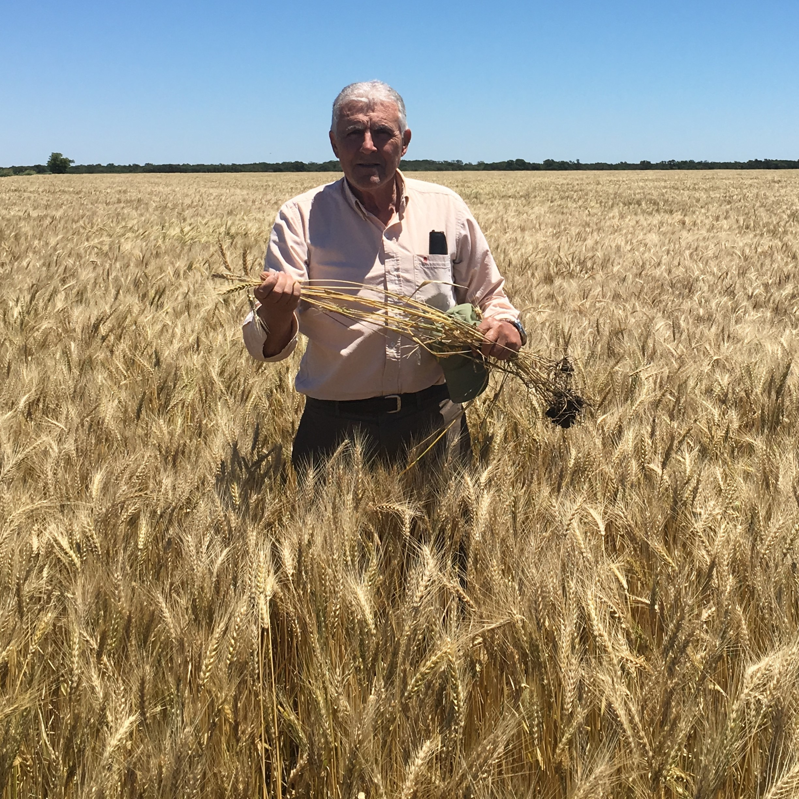
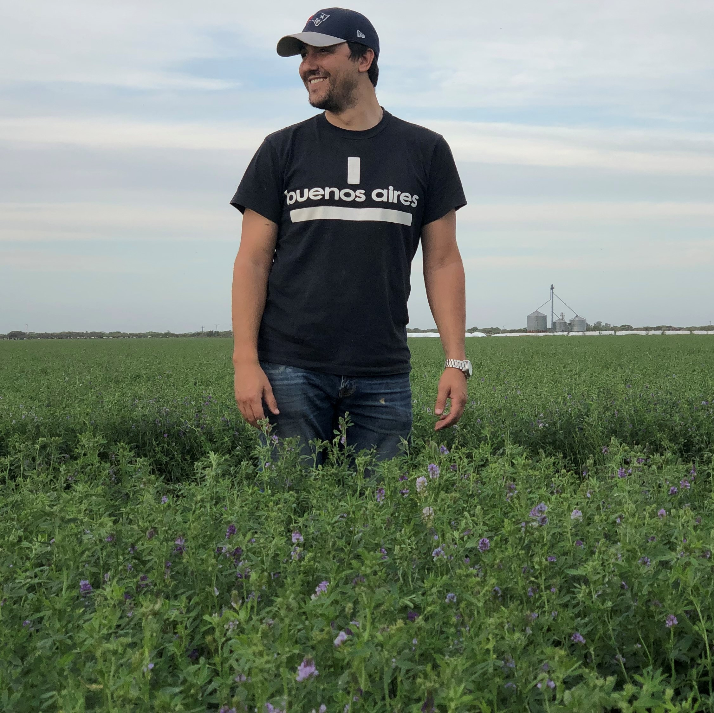
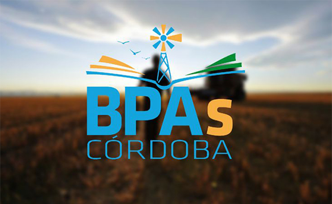

AGRICULTURA
Produccion sustentable desde Cordoba al mundo
NUESTROS CULTIVOS
La agricultura es la actividad productiva más importante del sector primario en la provincia de Córdoba, y principal ingreso de la empresa. Los cultivos que se siembran son maiz, soja, trigo y alfalfa. Los lotes se manejan desde el barbecho hasta la post cosecha para asegurar la sustentabilidad del sistema, reduciendo el uso de agroquímicos y aplicando tecnología de punta desde la siembra hasta la cosecha.
El trabajo agrícola implica un arduo trabajo desde la preparación del suelo, la fertilización, la siembra, control de malezas, plagas y enfermedades durante el crecimiento y desarrollo del cultivo para culminar con la cosecha. La producción, además, se ve afectada y depende totalmente de las temperaturas y precipitaciones que recibe el cultivo durante su desarrollo.
MAIZ
El maíz es el cultivo por excelencia que utilizamos para la producción de grano y forraje, alcanzando rendimientos que nos permiten abastecer durante todo el año a los establecimientos ganaderos para el consumo animal.

SOJA
La soja es el cultivo estival de mayor producción de la empresa, destinado principalmente a la exportación y también utilizado como fuente proteica fundamental para la alimentación de los animales tanto del Feedlot como del tambo.
TRIGO
El trigo es el cereal invernal que nos permite mantener la rotación de cultivos, garantizando la sustentabilidad del sistema. El destino de la cosecha es para consumo interno, como principal materia prima para los molinos harineros y panificación.
ALFALFA
La alfalfa es la pastura más importante involucrada en la alimentación bovina. Aporta proteína y fibra, esenciales para asegurar una óptima salud animal. La producción anual se destina al abastecimiento de los establecimientos ganaderos de la empresa
PRODUCCION SUSTENTABLE
Desde el año 2019, Doble R SRL esta orgullosamente adherido al programa provincial de Buenas Prácticas Agrícolas, el cual tiene como objetivo incentivar a los productores agropecuarios para que implementen prácticas que fortalezcan la sostenibilidad del sistema agroalimentario. El programa busca generar en la Comunidad Agroalimentaria, a través de un sistema de incentivos, la conciencia de que el hacer bien las cosas y cumplir con las leyes, no sólo debe ser parte de la cultura de los productores cordobeses, sino que debe acompañar al desarrollo productivo.
